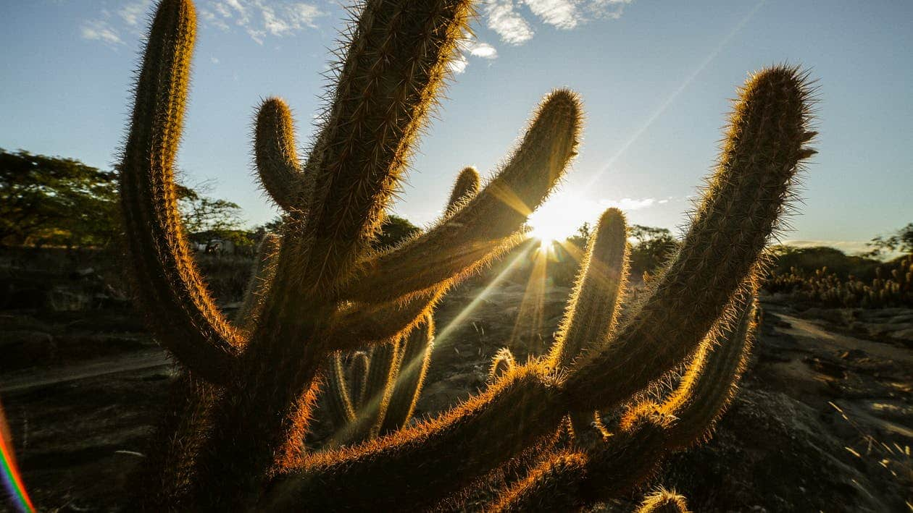

Las plantas del desierto
La aridez de los desiertos hace que sólo puedan instalarse en ellos plantas muy especializadas (plantas “xerófilas”) bien adaptadas para soportar la sequía evitando pérdidas excesivas de agua y capaces de sobrevivir en medios con una elevada salinidad.
Las plantas xerófilas han desarrollado mecanismos de adaptación que tienden a repetirse por convergencia evolutiva en todos los desiertos del mundo pese a que, frecuentemente, las especies que los habitan no guardan ninguna relación entre sí.
¿Qué son las plantas xerofitas?
La etimología de la palabra xerófita nos hace retroceder hasta el griego antiguo, donde encontramos las dos palabras que la forman en realidad: fito o phytón, que significa planta, y xero, cuyo significado es seco. De ahí, podemos decir de forma general que las plantas xerófitas son aquellas que se han adaptado ante la escasez de agua. Gracias a la modificación de sus hojas, tallos y raíces son capaces de absorber y retener el agua durante largos periodos de tiempo para sobrevivir a climas extremos.

Adaptaciones morfológicas en las RAÍCES:
Al disponer de menos agua por unidad de superficie, las plantas necesitan desarrollar mayores sistemas de raíces de forma que a medida que se incrementa la aridez, se reducen las partes aéreas, expuestas al calor y a la deshidratación, mientras que las subterráneas crecen. En los desiertos, la mayor parte de la biomasa vegetal se encuentra bajo el suelo.
Como norma general, la relación entre la proporción de la fitomasa aérea y subterránea se invierte entre las regiones húmedas y las áridas. El caso más notable que se conoce es el de Pachypodium bistorta, una planta sudafricana cuyo tubérculo alcanza 9 kg mientras que las hojas no superan 28 g (lo que da una proporción aproximada de 320/ 1).
En las plantas xerófilas las raíces forman tupidas marañas superficiales con objeto de poder absorber la máxima cantidad de agua tras cada precipitación y en algunas especies pueden adquirir, junto a la parte inferior de los tallos, un volumen o una longitud desmesurados destinados a alcanzar y almacenar el agua.
Adaptaciones morfológicas en las HOJAS:
Las hojas resultan imprescindibles para la respiración y fotosíntesis de las plantas pero son muy frágiles frente a la deshidratación por lo que en las plantas xerófilas reducen al máximo su tamaño a la vez que se protegen con una gruesa cutícula.

Mas informacion
Te recomendamos ver este video el cual explica de una forma breve sobre las plantas xerofitas, y el por qué son una muy buena opcion para empezar un jardin.